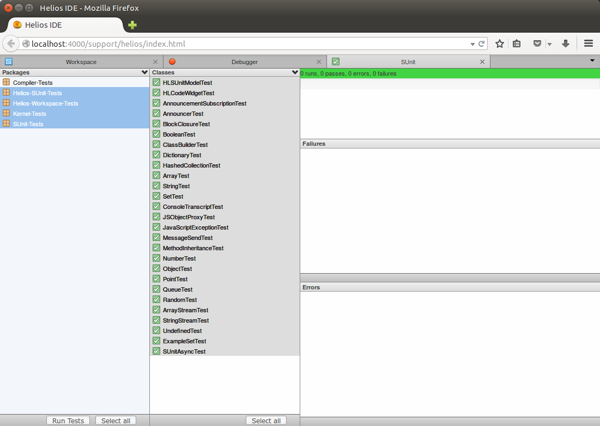
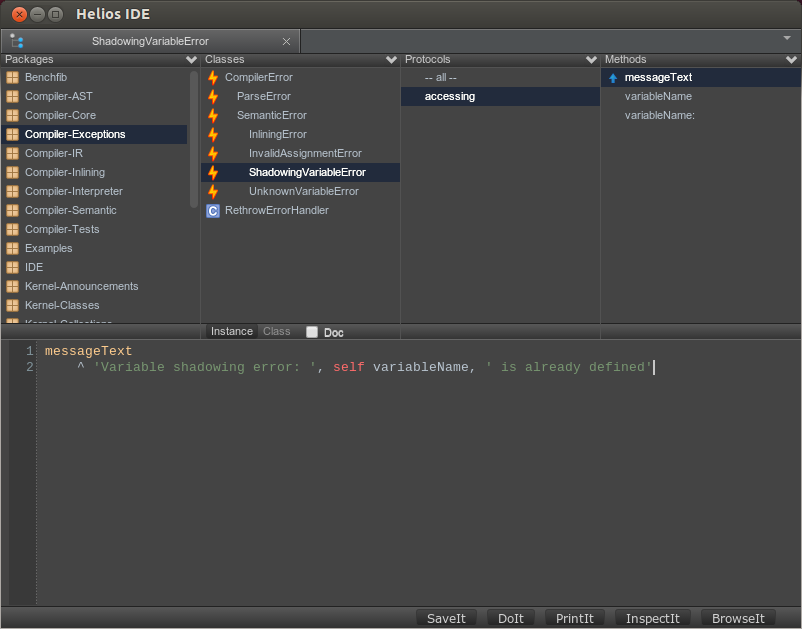

Nicolas Petton's weblog
You can subscribe to the RSS feed.
Tide & Marina presentation @RMoD presentation rmod
Today I gave a presentation (probably my last one, as I will leave for Stockholm soon) about Tide and Marina to my colleagues of RMoD.
Tide is a new web framework that makes Pharo and Amber communication a breeze. Marina is the CMS that powers the new Pharo website.
Here are the slides.
tmate.io: terminal sharing made easy pairprogramming emacs
Recently I was looking for good remote pair programming tools, like screen sharing and audio/video tools.
For audio, Jabber and Skype work fine. I also use Google Hangout from time to time.
For screen sharing I used Teamviewer in the past, but the quality isn't always good enough to share an Emacs window, and it is a commercial application. Skype's screen sharing works fine but it's read-only sharing.
I decided to give the famous tmux a try, and stumbled upon Tmate, a tmux fork that makes terminal sharing a breeze.
The idea behind tmate is simple, it's like tmux but with sugar on
top so that you don't have to setup anything (you can setup your own
tmate server if you want though), just start tmate in a terminal
and it will handle the ssh server connection for you and give you a
one time ssh access that you can copy/paste to you mates.
It's as good as tmux: it's fast, reliable and works great in general, even with slow bandwidths. Best of all, it's opensource, works on Linux and OSX. I finally have a great tool to share an Emacs session.
Amber 0.12.6 released! amber smalltalk
Read the announcement.
Interview with Guillermo Polito RMoD interview
This is the fifth post of my series of interviews, in which I interview my colleagues of the RMoD team. After the Interview with Jean-Baptiste Arnaud, I interview Guillermo Polito.
Guille (pronounce it Guiche) is another one of the many argentinians who have been working at Inria. Guille is doing a PhD in RMoD, he drinks mate all day long (which argentinian doesn't?), and he's always in when it comes to going for a beer somewhere in Lille after work.
Per-computer Emacs settings emacs
I use Emacs on all of my machines, being laptops or servers. While my Emacs settings are shared among all of my computers, some of these settings really matter for one specific computer.
Interview with Jean-Baptiste Arnaud interview rmod
This is the fourth post of my series of interviews, in which I interview my colleagues of the RMoD team.
This time I interview Jean-Baptiste Arnaud.
Amber's new test runner amber smalltalk helios
Today the helios-sunit branch has been merged into master. This
is an important milestone for Helios, Amber's new IDE, as it now has
a fully functional test runner.

Figure 1: Helios' test runner
Amber 0.12.4 released! amber smalltalk
After 3 months of development, we are happy to announce the release of Amber 0.12.4.
Highlights:
- Several improvements in Helios, including UI-related and debugger improvements
- Loading Amber without cloning the repository has been simplified
- A new documentation (in progress) can be found at http://docs.amber-lang.net/[1]
Commits: https://github.com/amber-smalltalk/amber/compare/0.12.3...0.12.4[2]
Issues: https://github.com/amber-smalltalk/amber/issues?milestone=12&state=closed[3]
Install Amber 0.12.4 from here!
Running Helios as a desktop app amber
I just pushed on the nw-helios-app branch a working version of Helios running as a desktop app, remotely connected to an Amber app.

Figure 2: Niflheim theme
To try it yourself, you'll first need to install node-webkit then run from the `hw-helios-app` branch:
nw helios.nw
Interview with Stéphane Ducasse interview RMoD
This is the third post of a series, in which I interview my colleagues of the RMoD team (in Lille, France). This is the interview of Stéphane Ducasse, our leader and the backbone of RMoD.
A dark theme for Emacs emacs theme

Interview with Esteban Lorenzano interview RMoD
This is the second post of a series, in which I interview my colleagues of the RMoD team (in Lille, France). This time I interview Esteban Lorenzano, my neighbour, colleague and friend.
Details matter helios amber smalltalk
Helios is moving forward with interesting new features, especially regarding navigation in code. These improvements are for the major part small and might be seen as unimportant details. The thing is details matter! Polishing Helios is now a priority in Amber's development, and a full replacement of the old IDE is planned for one of the next releases.
Here's a short video demonstrating some of the changes I like the most.
Help us write a documentation for Amber! amber
There's a new website in Amber-land: docs.amber-lang.net.
We just started to extract pages from our Github wiki into a new website dedicated to Amber's documentation. It often requires rewriting and quality improvements. As the current wiki misses a lot of content and is far from covering all aspects of Amber, there's quite some work yet to be done.
You can help us make Amber a better documented language! You can contribute on github, send us pull requests, report typos and other issues or ask for for specific topics to be covered.
We need more topics covered, reviews, etc.
discover-js2-refactor emacs javascript
Since I started using Emacs for most of my development, I've been a big fan of js2-mode, a major mode for editing JavaScript files based on an AST, and js2-refactor, a library built on top of it to perform refactorings.
Interview with Damien Cassou RMoD interview
This is the first post of a series, in which I interview my colleagues of the RMoD team (in Lille, France), with the hope that I can share part of what it really means to work here.
How is it to work at RMoD? A series of interviews. RMoD interview
I have the incredible chance to work in an amazing environment, surrounded by smart and passionate people. This place is RMoD, a research team at Inria Lille.
At RMoD we not only make Pharo, Amber, work on Moose and do research. For me the work is all about the people, the energy and shared passion. A lot of the culture of the team is actually built outside of the office, during the friday evenings at Café Citoyen sharing a beer, or during other events. I'm actually proud to say that many of my colleagues became very good friends over time.
I decided to share my experiences of working there, and to do so I will start a series of interviews of the team members on my blog. My goal is not to ask technical questions about Pharo or a PhD thesis, but to share the human side of the story.
I will post the interviews as they get completed, so stay tuned!
Keybindings in Amber's new IDE helios amber smalltalk
Amber's new IDE, fondly named Helios, has been built with keyboard power users in mind from the beginning. It evolved quite a bit over time, and keyboard shortcuts as well as their UI are no exception.
Amber 0.12.2 released! amber smalltalk
This is the second minor release of Amber 0.12 (announcement), 20 days after the release of version 0.12.1.
Slides from my presentation at Smalltalks 2013 amber agentina smalltalks
I just put online slides from my presentation of Amber at Smalltalks 2013 in Rosario.
Amber 0.12.0 released! amber smalltalk
The last 3 months have been exciting in Amber-land!
The new release includes a lot of improvements, from the new package management to the AST interpreter, as well as improvements in Helios, the CLI tools and the compiler, among other changes.
Amber's new compiler amber smalltalk compiler
Amber's compiler has been improved some months ago and a post explaining its new architecture was a long overdue.
Following Opal (the new Pharo compiler) architecture, the compiler has been entirely rewritten from a single, complex and stateful AST visitor into several smaller, single-purpose classes, making it a more flexible and extensible compiler.
Arrived in Buenos Aires argentina smalltalk amber
Yesterday I arrived in Buenos Aires.
Next week I'll be heading to Rosario for the Smalltalks conference where I'll be giving a talk about Amber. This talk will highlight key features and use-cases of Amber, explain some of the internals as well as important new and planned features.
I hope to see you there!
Installing Pharo on Ubuntu pharo ubuntu smalltalk
I'm always surprised when I see that people are still installing the Pharo Virtual Machine by hand on Ubuntu while Damien Cassou has made a ppa for it.
Blogging with org-mode emacs orgmode
I just switched my personal website and blog engine from Jekyll to
Org-mode. As all my blog posts were already written in the
org-mode format, switching was a breeze. Org-mode includes a RSS
exporter in the contrib directory and together with its HTML
publishing features, it makes it a very powerful website builder.
Amber 0.10.0 released! amber smalltalk
Today we released Amber 0.10.0. After a year of work, we beleive this is a great release. I'm especially glad to say that this release was a real community effort.
Read the full announcement.